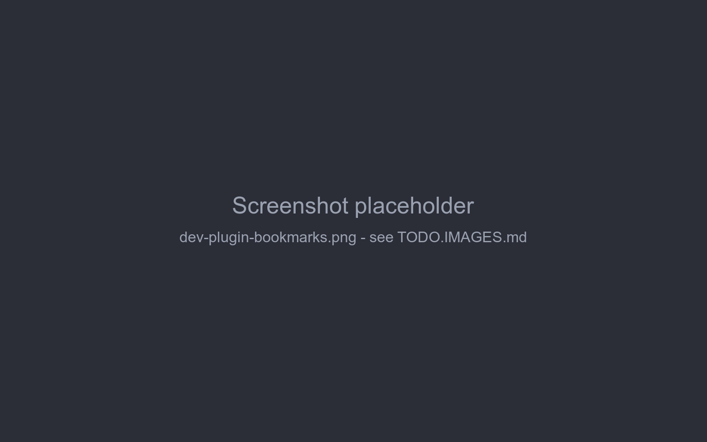

Example plugin
This page builds a small plugin from scratch - Bookmarks, which lets you bookmark story parts - and then walks through the smallest bundled plugin, Chapter Marker. Together they use everything from the previous pages: a bundle, decorators reading arguments, locals and fields, data in attributes, and cleanup on unload.
Bookmarks
What it does:
- every story part's menu gets a Toggle bookmark item,
- bookmarked parts are marked with ★ in the story sidebar,
- the bookmark is stored on the part, so it's kept in backups and copied by Branch Story.

1. Install the application
The plugin compiles against the application's classes, installed in the local Maven repository:
cd marginalia
mvn install -DskipTests2. Create the project
bookmarks/
├── pom.xml
└── src/main/java/com/example/marginalia/bookmarks/
├── BookmarksActivator.java
└── BookmarksExtension.javaCopy marginalia/plugins/chaptermarker/pom.xml and change:
groupIdtocom.example.marginalia,artifactIdtobookmarks,Bundle-Activatortocom.example.marginalia.bookmarks.BookmarksActivator,Import-Packageto!com.example.marginalia.bookmarks.*andExport-Packagetocom.example.marginalia.bookmarks.*.
Keep the rest - the provided dependencies, the AspectJ plugin (for @Configurable) and the bundle plugin. See
Plugin basics → pom.xml for what each part does.
3. The activator
It only registers the extension:
package com.example.marginalia.bookmarks;
import com.github.enerccio.marginalia.extensions.MarginaliaExtension;
import org.osgi.framework.BundleActivator;
import org.osgi.framework.BundleContext;
import org.osgi.framework.ServiceRegistration;
public class BookmarksActivator implements BundleActivator {
private ServiceRegistration<MarginaliaExtension> registration;
@Override
public void start(BundleContext context) {
registration = context.registerService(MarginaliaExtension.class, new BookmarksExtension(), null);
}
@Override
public void stop(BundleContext context) {
if (registration != null) {
registration.unregister();
registration = null;
}
}
}4. The extension
package com.example.marginalia.bookmarks;
import com.github.enerccio.marginalia.domain.model.impl.ChatMessage;
import com.github.enerccio.marginalia.domain.service.ChatMessageService;
import com.github.enerccio.marginalia.domain.service.ExtensionService;
import com.github.enerccio.marginalia.domain.service.ExtensionService.ExtendableMethodContext;
import com.github.enerccio.marginalia.domain.service.ExtensionService.ExtensionDecorator;
import com.github.enerccio.marginalia.domain.service.OsgiService;
import com.github.enerccio.marginalia.domain.service.impl.OsgiServiceImpl;
import com.github.enerccio.marginalia.extensions.MarginaliaExtension;
import com.github.enerccio.marginalia.ui.dialogs.manuscript.ManuscriptStoryPart;
import com.google.gson.JsonObject;
import com.vaadin.flow.component.ComponentUtil;
import com.vaadin.flow.component.button.Button;
import com.vaadin.flow.component.contextmenu.ContextMenu;
import com.vaadin.flow.component.contextmenu.MenuItem;
import com.vaadin.flow.component.notification.Notification;
import org.osgi.framework.Bundle;
import org.slf4j.Logger;
import org.slf4j.LoggerFactory;
import org.springframework.beans.factory.annotation.Autowired;
import org.springframework.beans.factory.annotation.Configurable;
import java.util.Collections;
import java.util.List;
import java.util.Set;
import java.util.WeakHashMap;
@Configurable
public class BookmarksExtension implements MarginaliaExtension {
private static final Logger log = LoggerFactory.getLogger(BookmarksExtension.class);
private static final String KEY = "com.example.marginalia.bookmarks";
private static final String MENU_ITEM_KEY = KEY + ".menuItem";
private static final String STORY_PART = "com.github.enerccio.marginalia.ui.dialogs.manuscript.ManuscriptStoryPart";
private static final String MESSAGE_CARD = STORY_PART + "$ChatMessageCard";
@Autowired
private ChatMessageService chatMessageService;
private final Set<ContextMenu> menus = Collections.synchronizedSet(Collections.newSetFromMap(new WeakHashMap<>()));
private List<ExtensionDecorator> decorators = List.of();
@Override
public void onExtensionLoad(Bundle bundle, OsgiService osgiService, ExtensionService extensionService) {
ExtensionDecorator menuDecorator = new ExtensionDecorator() {
@Override
public void onMethodEnter(Object instrumented, ExtendableMethodContext context) {
}
@Override
public void onMethodLeave(Object card, ExtendableMethodContext context, Throwable throwing) {
if (throwing != null) {
return;
}
ContextMenu menu = context.getReflectiveFieldValue(card, "hamburgerMenu", ContextMenu.class);
if (menu == null || ComponentUtil.getData(menu, MENU_ITEM_KEY) != null) {
return;
}
MenuItem item = menu.addItem("Toggle bookmark", event -> {
try {
// read the field when clicked - the card replaces its message on every save
ChatMessage shown = context.getReflectiveFieldValue(card, "message", ChatMessage.class);
ChatMessage fresh = chatMessageService.find(shown.getId());
setBookmarked(fresh, !isBookmarked(fresh));
chatMessageService.save(fresh);
// redraw the story so the sidebar shows the change
ManuscriptStoryPart storyPart = context.getReflectiveFieldValue(card, "this$0", ManuscriptStoryPart.class);
context.callReflectiveMethod(storyPart, "renderStoryContent", new Class<?>[0], new Object[0], void.class);
} catch (Exception e) {
log.error("Cannot toggle bookmark", e);
Notification.show("Cannot toggle bookmark: " + e.getMessage());
}
});
ComponentUtil.setData(menu, MENU_ITEM_KEY, item);
menus.add(menu);
}
};
ExtensionDecorator sidebarDecorator = new ExtensionDecorator() {
@Override
public void onMethodEnter(Object instrumented, ExtendableMethodContext context) {
}
@Override
public void onMethodLeave(Object storyPart, ExtendableMethodContext context, Throwable throwing) throws Exception {
if (throwing != null) {
return;
}
ChatMessage msg = context.getMethodArgument("msg", ChatMessage.class);
if (isBookmarked(msg) && context.hasLocalVariable("sidebarBtn", Button.class)) {
Button sidebarBtn = context.getLocalVariable("sidebarBtn", Button.class);
sidebarBtn.setText("★ " + sidebarBtn.getText());
}
}
};
try {
extensionService.registerDecorator(menuDecorator, MESSAGE_CARD, "createMenuItems");
extensionService.registerDecorator(sidebarDecorator, STORY_PART, "createSidebarButton");
decorators = List.of(menuDecorator, sidebarDecorator);
} catch (Exception e) {
log.error("Bookmarks extension failed to load", e);
}
}
@Override
public void onExtensionUnload(Bundle bundle, OsgiServiceImpl osgiService, ExtensionService extensionService) {
decorators.forEach(extensionService::unregisterDecorator);
decorators = List.of();
synchronized (menus) {
for (ContextMenu menu : menus) {
// menus belong to other sessions - change them under their own lock
menu.getUI().ifPresent(ui -> ui.access(() -> {
MenuItem item = (MenuItem) ComponentUtil.getData(menu, MENU_ITEM_KEY);
if (item != null) {
menu.remove(item);
ComponentUtil.setData(menu, MENU_ITEM_KEY, null);
}
}));
}
menus.clear();
}
}
static boolean isBookmarked(ChatMessage message) {
JsonObject attributes = message != null ? message.getAttributes() : null;
return attributes != null && attributes.has(KEY) && attributes.get(KEY).getAsBoolean();
}
static void setBookmarked(ChatMessage message, boolean bookmarked) {
if (message.getAttributes() == null) {
message.setAttributes(new JsonObject());
}
if (bookmarked) {
message.getAttributes().addProperty(KEY, true);
} else {
message.getAttributes().remove(KEY);
}
}
}How it works:
-
Two decorators.
menuDecoratorruns afterChatMessageCard.createMenuItems()- the card's constructor calls it, so every card gets the item.sidebarDecoratorruns afterManuscriptStoryPart.createSidebarButton(msg, orderId, dbId), whichrenderStoryContent()calls for each part of the branch. -
Reaching the components. The menu is the card's field
hamburgerMenu; the sidebar button is the local variablesidebarBtnofcreateSidebarButton, the part is its argumentmsg. Both names are checked before use (hasLocalVariable) or fail with a logged warning if the application changes. -
Adding once.
ComponentUtil.setData(menu, MENU_ITEM_KEY, item)marks the menu; a second call for the same menu does nothing. -
Data. The bookmark is one boolean under the plugin's key in the part's
attributes. The click listener reads the card'smessagefield at click time and reloads the part (chatMessageService.find(id)) before changing it, because the card's copy may be stale (Extended attributes). -
Redrawing. After saving it calls the story part's private
renderStoryContent()throughcallReflectiveMethod, reaching the outerManuscriptStoryPartthrough the inner class'sthis$0field. The redraw runscreateSidebarButtonagain, so the sidebar decorator adds the ★. -
Unloading. Decorators are unregistered; menu items are removed from the tracked menus inside each menu's own
ui.access(...), because they belong to other users' sessions (Extending the UI → Unloading). Sidebar buttons lose their ★ on the next redraw. -
Errors.
onExtensionLoadruns without a UI, so it logs instead of opening an error dialog.
With Chapter Marker installed too, both plugins decorate createSidebarButton, and decorators run in the order the
plugins were loaded. Bookmarks prefixes the text, so it works after Chapter Marker; Chapter Marker replaces the text
of chapter parts, so the ★ of a bookmarked chapter is lost when Chapter Marker runs second (and when the part is
edited).
5. Build and load
cd bookmarks
mvn package # target/bookmarks-1.0.0.jarLoad target/bookmarks-1.0.0.jar in Admin → Extensions and open a book (books that were already open need to be
closed and opened again). Open a part's menu, choose Toggle bookmark - the part's sidebar entry gets the ★.
If nothing appears, look in the log for Mod 'com.example.marginalia.bookmarks.BookmarksExtension$...' skipped on ... (a name that doesn't exist) or Unhandled exception in extension ....
Where to go from here
-
Show the bookmarks in a tab of their own: decorate
renderStoryContent()and add a tab toleftBar, like Side Query (A tab next to the story). -
Put bookmarked parts into the prompt: register a listener for
AFTER_MANUSCRIPT_CONCATENATION(Generation pipeline).
Walkthrough: Chapter Marker
marginalia/plugins/chaptermarker turns the story sidebar into a table of contents: a part whose text contains a
Markdown heading is shown as 5. Chapter 3: The Harbour, highlighted. It has two classes and no data of its own -
the heading is part of the story text.
ChapterMarkingActivator is the same as the Bookmarks activator. ChapterMarkingExtension registers two decorators
in onExtensionLoad.
Labelling the sidebar - after ManuscriptStoryPart.createSidebarButton(msg, orderId, dbId):
ChatMessage msg = context.getMethodArgument("msg", ChatMessage.class);
Integer orderId = context.getMethodArgument("orderId", int.class); // primitive argument: ask for int.class
VerticalLayout sidebarList = context.getReflectiveFieldValue(instrumented, "sidebarList", VerticalLayout.class);
Button sidebarBtn = null;
if (context.hasLocalVariable("sidebarBtn", Button.class)) {
sidebarBtn = context.getLocalVariable("sidebarBtn", Button.class);
} else if (sidebarList.getComponentAt(sidebarList.getComponentCount() - 1) instanceof Button lastBtn) {
sidebarBtn = lastBtn; // fallback if the local is renamed
}It remembers the button's original text, the order and the part's uuid on the button
(ComponentUtil.setData(...)), then sets the chapter title and style if the part has a heading.
Following edits - after ManuscriptStoryPart$ChatMessageCard.autosaveAndSwapToMarkdown(), which saves an edited
part:
ChatMessage chatMessage = context.getReflectiveFieldValue(instrumented, "message", ChatMessage.class);
ManuscriptStoryPart parentPart = context.getReflectiveFieldValue(instrumented, "this$0", ManuscriptStoryPart.class);
VerticalLayout sidebarList = context.getReflectiveFieldValue(parentPart, "sidebarList", VerticalLayout.class);It finds the sidebar button whose stored uuid matches the edited part and relabels it - or restores the original text when the heading was removed. The data stored on the button in the first decorator is what makes this possible without rebuilding the sidebar.
Unloading unregisters both decorators. Labels already changed stay until the story is redrawn, which is acceptable here: they're just text.
What to take from it:
- arguments, locals and fields are all used, each with the right accessor;
- primitive arguments are read with the primitive type;
- a fallback for the local variable keeps the plugin working if the variable is renamed;
- component data (
ComponentUtil) carries state from one hook to another.
The other bundled plugins build on the same pieces: Reviewer and Side Query add menu items, tabs, settings panels and call the model (Extending the UI); Lorebook VCS stores larger data in a lorebook's attributes (Extended attributes).